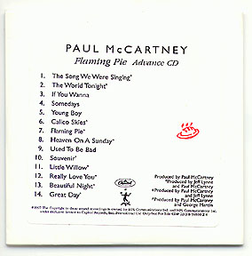
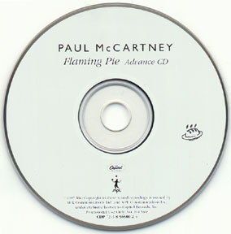

|
Pictured is a 3-song sampler of alternate takes of "The World Tonight", "Young Boy" and "Somedays". Manufactured by Tower Mastering for Capitol Records on January 30, 1997. It is estimated that only 30 copies were made of this tape. |
 |
 |
Flaming Pie, Paul McCartney's much anticipated solo album, which takes its title from Beatles mythology, hit stores on Tuesday, May 27th.
Trivia: "Flaming Pie", Lennon sarcastically wrote in a magazine article that the band's name came when a man on a flaming pie appeared to him in a vision and said, "From this day on, you are Beatles with an 'A'." Real Audio
His first studio recording in four years, Flaming Pie marks the first album release by a Beatle since The Beatles Anthology, which scored three consecutive #1 recordings and a #1 longform video. McCartney says he was "inspired in the making of Flaming Pie by The Anthology, which reminded him of the songwriting standards and the fun of The Beatles."
Flaming Pie features 14 songs, almost all written by McCartney during The Beatles Anthology campaign, and includes bass, guitar, piano and drum performances by McCartney, as well as appearances by Ringo Starr, Jeff Lynne, Steve Miller and Linda McCartney.
The album release coincided with the worldwide screening of a new one-hour television documentary on Paul McCartney, filmed by Grammy Award-winning Beatles Anthology director, Geoff Wonfor. The documentary, which brings the McCartney story up to date, aired in 30 countries around the world.
The album is in stores now from Capitol Records and a video directed by Wonfor is soon to follow. The album includes a 24 page booklet, complete with personal liner notes by McCartney and Linda McCartney photographs.
Flaming Pie comes 30 years to the week after the release of The Beatles' seminal album Sgt. Pepper's Lonely Hearts Club Band and 40 years after the first meeting between McCartney and John Lennon.
|
Pictured is a 3-song sampler of alternate takes of "The World Tonight", "Young Boy" and "Somedays". Manufactured by Tower Mastering for Capitol Records on January 30, 1997. It is estimated that only 30 copies were made of this tape. |
| Java Menu |
| Check out the "Flaming Pie" on the Internet. |